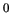

PID Controller using Ziegler Nichols Tuning
The results of the of the experiments carried out for the self tuning PID controller using Ziegler Nichols tuning method
are shown. The upper plot shows the variations of the set point temperature (the black line) and the actual temperature
(the purple line) in the SBHS. The lower plot shows the control effort.
Figure 9.24:
Result for self tuning PID controller designed using Ziegler Nichols Tuning for set point going from 32C to 37C
|
 |
Figure 9.25:
Result for self tuning PID controller designed using Ziegler Nichols Tuning for set point going from 32C to 46C
|
 |
From the graph it can be seen that for both the experiments, the self tuning PID controller is able to keep the
temperature close to the set point and the stabilisation is also fast. For comparison, plots for experiments conducted with
conventional PID controller designed using Ziegler Nichols method are also shown.
Figure 9.26:
Result for conventional PID controller designed using Ziegler Nichols Tuning for set point going from 32C to 37C
|
|
Figure 9.27:
Result for conventional PID controller designed using Ziegler Nichols Tuning for set point going from 31C to 45C
|
 |
From the graph, we can see that the conventional PID controller is not able to make the temperature close to the set point
when the set point value is 45C. The self tuning PID controller had successfully brought the temperature to 45C.
rokade
2017-04-23